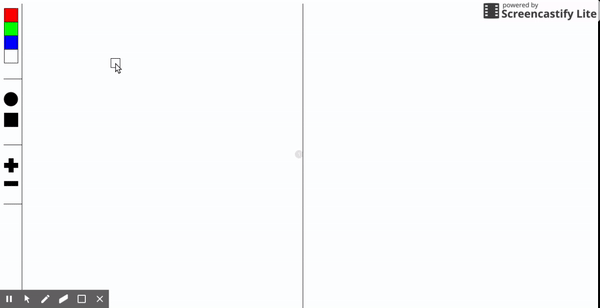

This page is all about how I made my generative art! For our generative art we used the programming language javascript along with additional code known as javascript processing. During this expedition block I have learned a lot about javascript and processing. Throughout this page I will try my best to explain what I learned including some specifics of my code and some challenges I faced creating my program. Firstly, before we jump into the explaining, I need to tell you what my generative art is! My generative art is a very simple drawing program which allows you to draw using a few shapes and colors. In addition to this you can also make shaoes larger or smaller. You can easily view my generative art by clicking on the appropriate link on the nav bar.
Shapes are integral parts of my program, and
each have specific code used to create them. First I'll
explain how to make a rectangle, the rect() function creates
a rectangle based on 4 parameters x, y, with, height. For
instance: rect( 40, 70, 30, 30) would create a rectangle with
a top right corner located at x 1 and y 70 and would have a
height and width of 30. Pretty simple right? An ellipse()
function might look something like this:
ellipse(40, 70, 30, 30);. The difference between an ellipse
and a rectangle even if they appear to have the same values
is that the x and y positions for the ellipse show where the
ellipse's center is as opposed to the right corner of
the rectangle.
These two shapes have
the same parameter values and yet
they are in different places because of how the parameters
effect the location of the shape. This was a problem I
encountered during the creation of my generative art because
if effected where the shapes got drawn in relation to the
mouses location. To overcome this I added to the x and y
values when I switched from drawing with a circle to a
rectangle or a rectangle to a circle. Even now it is
slightly glitchy because of this problem.
In my generative
art I used both rect and ellipse as well as line (line has
4 parameters the x any of the start and end point). I used
rect and ellipse to create buttons for my sidebar and also
as a part of my drawing program because you can draw with
the shapes. Using the size I was able to add the ability to
change the size of the shapes you were drawing with.
Colors are
simple, you can use the fill() function to specify the color
of objects below the function. The fill() function uses the
parameters r,g,b to determine the color of the objects. You
can even use multiple fill() functions to create varying
colors between objects. Take this code for example:
fill(255, 0, 0)
rect(40, 70, 30, 30);
fill(255, 255, 255)
ellipse(40, 70, 30, 30)
Creates:
This variation of colors can be created because of the
overlapping fill() functions, the first fill function makes
both shapes red and the second fill() function makes only the
second shape white. The reason for this is the order of said fill()
functions inside of the code.
In my generative art I used the fill()
command to color my shapes various colors. I used the variables
rbgRed/Green/Blue (scroll down to learn about variables) to change
the color as specified by fill(). In my program color is important
because it is a drawing program (pretty self explanatory). One of
the few things you can do with the program is change the color with
which you are drawing from red, white, green, and blue.
Functions contain codeblocks and when a function is called the computer runs the codeblock.
For instance you could put a click() function inside a
mouseClicked function so that when the mouseClicked() function
is called (the mouse is clicked) the click() function is called.
Inside the click() there could be any codeblock, perhaps it
creates a circle or makes a pop-up. The code of a function would
look something like this: function click() { rect( 40, 70, 30, 30) };
This code tells the computer that when the click() function is
called it should create a rectangle based on the stated parameters.
If you wanted to call the click() function you would simply use
click() in place of the rect() function.
Functions can be
extremely useful in making your code more efficient to write.
The
image above is how a function is organized, the function
4 parts, the function decleration tells the computer that this
code is a function. The next part, the function name tells the
computer when to call the function. The arguement tells the
computer when the function can run (if left blank than it will
always run). The last part, the statement, is the codeblock that
the computer will run. In my generative art I used functions to expedite
the process of pushing vaues to my array. I created a function that when
called upon would push the mouse's current x, y, the shape's size and a
bunch of other values(scroll down to learn more about arrays). The program
also uses the draw function which is a part of processing (I didn't
write the draw function) and the mouseClicked/Dragged functions which
come as a part of Javascript Processing. I used the mouseClicked/Dragged
functions to create shapes based on where the user clicks or drags
their mouse.
Loops tell the computer to run a specific codeblock as long as
a condition is met. There are two types of loops, for loops and if
loops. for loops run as long as something is true, if loops run if
something is true. For loops and if loops use similiar structures,
for loops are structured with for(arguement){statement} whereas if
loops simply have if inplace of for. for Loops are extremely useful
if you need to constantly keep check if something is true. if loops
are useful if you need to make something happen when a condition is
met or is you need to set a condition for something to happen. In my
generative art I used both if and for loops.
In my generative art I
am running the background() function which constantly creates more
backgrounds, this allows me to make it so that I have a rectangle
following my mouse and not leave rectangle behind, howver, this
creates problems if you want to have objects stay somewhere without
getting covered. To solvethis problem I used for loops to create
an infinite loop of creating the same shapes. This made it so that
everytime the background() functionwas run the computer simply
recreated shapes back on top. This was useful for making the "sidebar"
of my generativeart.
The second way I used a for loop was when I
created created rectangles based on values in my array (This is
explained in the array section of this how to page). I used if loops
to create a sort of barrier around my sidebar so that you could not
draw on the sidebar. The way I did this was by creating an if loop
inside of the mouseClicked function stating that if mouseX (the
mouse's X position) was greater than the sidebar + a bit of a
buffer accounting for the size of the shape then you could draw.
If the if loop was not met the function would be null.
Variables can be used in place of numbers or even words and
allow you to change the value of multiple items at once. They can
also allow you to write code more efficiently. Variables are
genenerally declared near the beginning of the code using the
format var title = statement; For example in my code I have
several variables one of which is the "size" variable I use
this variable to change the size of my shapes. The code looks
like this: var size = 20; This makes any shape with the
variable "size" instead of its width and height have a
width and height of 20 as defined by the variable. The
shape's code would look like this: rect(40, 70, size, size);
with (as you can see) the "size" variable being used in
replacement of the width and height. In my generativeart I used
quite a few variables:
var myArr = []; creates the array var rgbRed/Green/Blue create the
variables I used to specify color. I used var shape to reuse
the same code whether I was using squares or crircles or so
that the user can change what shape they are drawing with
using the program. shapePos, size, and barrier allow me to
change multiple areas of my program all at once. Variables
were exceedingly helpful in their ability to make things
uniform.
Arrays... arrays are confusing. Lets start simple, arrays
are lists that you can store information in. How is this useful?
Arrays can be used by the computers to "remember" things such
as where a user clicked. In my generative art I used this to
create shapes that stay where the user clicks or drags.

Using my generative art you can change the color and size of the
objects yous are drawing. In order for each object to be
individual to some degreee the array must store variables
for each value such as size and x and y position. The code
I used for this is: myArr.push( {x: mouseX - shapePos, y: mouseY
- shapePos, r: rgbRed, g: rgbGreen, b: rgbBlue, s: size, sh: shape});
As you can see this codeblock uses the myArr.push function to
push the specified values back to the array. This is located inside
a function that is called when the mouse is clicked or dragged.
With these values the shapes created when you click or drag retain
their attributes such as size and color. In order to set up an array
you simply create a variable with brackets instead of a statement.
It will look something like this: var myArr = []; As more values
are pushed into the array they will be stored here. In turn
the array can than be called upon for its stored values. In my
code I use this code:
for(var i = 0; i < myArr.length; i++)
{ fill(myArr[i].r, myArr[i].g, myArr[i].b); myArr[i].sh(myArr[i].x,
myArr[i].y, myArr[i].s, myArr[i].s );
to call upon the values I stored
with myArr.push. This for loop is infinite as long as i is less than
the number of values in the array so the loop will constantly
create rectangles based off of the values stored inside the array. In
addition to this the loop will contantly fill the said rectangles with
colors based off of the arrays stored color values.
Lets take apart
this section of code here: myArr[i].y is used instead of the typical
y value that you might find inside of a typical rect function. The
function uses the "i"th y value that the array has stored. The .y tells
the computer which variable to use and and the i tells the computer
which entry of y to use (in this case it uses each y value in turn).
Arrays were super helpful in creating my generative art but also were
a challenge to learn. As you can tell they are extremely confusing but
can be indispensible once you learn to use them.
Just to start, this was a fun and interesting project (most of the time). I enjoyed the problem solving and steeper learning curve of Javascript over HTML and CSS. Also the nature of the projects in general helped the class to be more interesting overall. What I learned? The obvious answer is that I learned a lot about programming in Javascript Processing and programming in general. However, I also feel like I have improved my problem solving skills and grown to better understand programming as an idea and the general concpets behind it. One interesting thing that I discovered during this project was that there are very few similarities between HTML/CSS and Javascript. In reflection I feel like I worked better this block of expeditions than last block and as a result both learned more and made a better end result. If I had infinite time to work on this project what would I improve? I'm not totally sure, I would continue to learn more about Javascript Processing and improve my project as I learn more techniques and things you can use Javascript processing for.